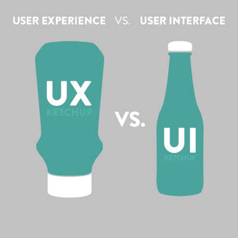

Infoliaison - Gestion des Actifs
Leroy Jimmy - Projet Final d'EntrepriseSQLI - Présentation
Généralités
ESN : Entreprise de Services Numériques
Quelques Chiffres
21 agences en France ou en Europe
Plus de 2000 collaborateurs
198 millions d'€ de chiffre d'affaire en 2016
Le Pôle ISC Bordeaux
Centre de Services de 200 collaborateurs
Principaux clients : RTE, La Banque Postale
Développement d'applications Web
Ma place chez SQLI
Le Pôle UX
Cellule Front-End et Design
Intervention en transverse sur les projets
Réalisations UX et UI
UX vs UI
Ergonomie
Analyse du besoin client
Etude du parcours utilisateur
Création de Wireframes
Design d'Interfaces
Etude de la charte graphique
Création de maquettes graphiques
Développement Front-End
HTML : Structure
CSS : Style
JavaScript : Dynamisme
Infoliaison-GA - Genèse
Client
RTE France
Entreprise de gestion du réseau électrique en France
Gestion des infrastructures
Pilotage du système électrique
Contexte
Infoligne et Infocable
Gestion des lignes extérieures et souterraines
Applications aujourd'hui obsolètes
Besoin
Capitaliser les données du patrimoine électrique
Réduire les coûts d'exploitation
Modernisation du système d'information
Créer une nouvelle application plus adaptée
Infoliaison : l'ensemble
Infoliaison Patrimoine
Infoliaison-GA (Gestion des Actifs)
Infoliaison-GDI (Gestion des Interventions)
Infoliaison-MOBILITE
Cadrage
Méthode Agile
Approche fondée sur le "produit" et non le "projet"
Plus souple que le Cycle en V
Implication du client dans le processus de développement
SCRUM
Approche fondée sur le "produit" et non le "projet"
Plus souple que le Cycle en V
Implication du client dans le processus de développement
SCRUM
User Stories
"En tant que pilote national
Je veux consulter le détail d'une sous-politique
Afin d'avoir des renseignements sur celle-ci"
Kamban
Objets métiers
Politiques
Opérations
Gisements
Réalisation
Framework V5
Framework d'entreprise pour RTE
Spring
AngularJS
Découpage des sprints
4 sprints pour le premier lot

Ma mission
Chiffrage
47 jours d'intervention
Ergonomie : dépassement
Développement Front-End : marge
Ergonomie
Définition des scénarios utilisateur
Recensement de l'architecture de données
Création de wireframes dynamiques

Développement Front-End
HTML : squelette de l'application
CSS : style de l'application
JavaScript : éléments dynamiques